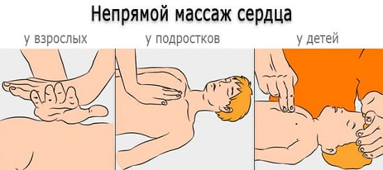

Сердечно-легочная реанимация (СЛР) разработана, чтобы поддержать или вернуть к жизни любого человека, у которого остановилось дыхание или сердцебиение. Лучший способ изучить СЛР и подготовиться к трудной ситуации — пройти сертификационный практический курс в вашей местной больнице. Ниже мы приводим краткое описание основ СЛР, которое ни в коей мере не может заменить полный курс. Если вы на данный момент попали в ситуацию, связанную с опасностью для жизни, позвоните в «Скорую помощь» и следуйте их инструкциям.
ПЕРВЫЕ ДЕЙСТВИЯ, ЕСЛИ РЕБЕНОК БЕЗ СОЗНАНИЯ
Если вы обнаружили, что человек потерял сознание, слегка встряхните его и очень громко спросите, в порядке ли он. Если ответа нет, следующий шаг зависит от возраста пострадавшего.
Дети 8 лет и младше. Если вы с ребенком одни, немедленно определите, дышит ли ребенок, приблизив свое ухо к его губам, чтобы слышать и ощущать дыхание и иметь возможность видеть движения его грудной клетки. Если ребенок не дышит, начните искусственное дыхание, как описано ниже, в течение 1 минуты до того, как звонить в «Скорую помощь». Скорее всего, дыхание прекратилось, и ребенок потерял сознание из-за инородного предмета в дыхательных путях, поэтому первым делом надо попытаться освободить дыхательные пути и обеспечить дыхание в течение этой первой минуты, а затем уже звонить в «Скорую помощь». Если рядом с вами есть кто-нибудь еще, сразу отправьте его позвонить в «Скорую помощь», а потом пусть возвращается, чтобы помочь вам.
Дети старше 8 лет и взрослые. Если вы одни с пострадавшим, звоните в «Скорую помощь» прежде, чем начать искусственное дыхание. У детей старшего возраста и взрослых более вероятна непосредственная остановка сердца, чем удушье из-за инородного тела, и вызов «Скорой помощи» является приоритетным. Если рядом с вами есть кто-нибудь еще, отправьте его звонить в «Скорую помощь», а потом пусть возвращается, чтобы помочь вам. Затем начинайте искусственное дыхание.
ИСКУССТВЕННОЕ ДЫХАНИЕ
Первым делом определите, дышит ли ребенок, правильно расположив его голову и рот и проверив дыхание.
Расположение дыхательных путей. Чтобы определить наличие дыхания, важно удостовериться, что голова и рот ребенка находятся в правильном положении. Одной рукой приподнимите подбородок ребенка, а другой надавите на лоб так, чтобы голова была немного запрокинута назад.
Посмотрите, прослушайте и прощупайте дыхание. Поднесите свое ухо ко рту ребенка, чтобы услышать звук дыхания. Вы можете почувствовать его дыхание своей щекой или заметить, как поднимается и опускается грудная клетка. Если ребенок дышит, продолжайте наблюдать за ним до прибытия «Скорой помощи». Если дыхания нет, продолжайте СЛР.
Начните искусственное дыхание. Зажмите нос ребенка, прижмитесь губами ко рту ребенка и сделайте два выдоха, следя, чтобы грудная клетка поднималась. Если ребенок младше года, то охватывайте своими губами его рот и нос и выдыхайте меньше воздуха, следя, чтобы грудная клетка поднималась. Если вы видите движения грудной клетки, переходите к непрямому массажу сердца.

Если ребенок начал дышать самостоятельно, наблюдайте за ним до прибытия «Скорой помощи». Если после ваших выдохов грудь ребенка не поднимается, еще раз приподнимите подбородок и откиньте голову и попробуйте искусственное дыхание еще раз. Если грудь по-прежнему не поднимается, возможно, дыхательные пути перекрыты инородным телом, в этом случае вы должны применить прием Геймлиха.
АВД: АВТОМАТИЧЕСКИЕ ВНЕШНИЕ ДЕФИБРИЛЛЯТОРЫ
Эти спасательные устройства оценивают состояние сердца пострадавшего и при необходимости могут дать электрический разряд, чтобы восстановить нормальную сердечную деятельность при некоторых видах остановки сердца. В настоящее время ими обычно укомплектованы крупные офисы, самолеты и другие общественные места. Вряд ли АВД будет под рукой в первые минуты СЛР, но, если и когда вы его получите, остановите непрямой массаж сердца, нажмите кнопку «один» и следуйте голосовым инструкциям. Вас попросят прикрепить провода к груди пострадавшего и, в зависимости от типа остановки сердца, нажать или не нажимать кнопку «один», чтобы вызвать электрический разряд, который может восстановить нормальную работу и ритм сердца. Оценив состояние сердца, АВД может проинструктировать вас продолжать непрямой массаж сердца и искусственное дыхание.
НЕПРЯМОЙ МАССАЖ СЕРДЦА
После того как вы успешно сделали два искусственных вдоха, пора заняться сердцем. Если ребенок задышал самостоятельно, значит, сердце работает и непрямой массаж не нужен. Если ребенок по-прежнему без сознания и не дышит, начинайте непрямой массаж сердца. При том что частота нажатий сейчас принята одинаковой для всех возрастов, техника непрямого массажа сердца очень различается:
Младенцы младше года. Поместите два пальца посередине грудины младенца непосредственно под воображаемой линией, соединяющей соски, и придавливайте на глубину в 1 дюйм (2,5 см).
Дети от года до 8 лет. Поместите запястье одной руки посередине грудины под воображаемой линией, соединяющей соски, и придавливайте на глубину в 1 1/2 дюйма (около 3,8 см).
Дети старше 8 лет и взрослые. Поместите запястье одной руки посередине грудины под воображаемой линией, соединяющей соски, а сверху него — запястье второй. Наклонитесь над пострадавшим, выпрямите руки в локтях и используйте свой вес, чтобы придавить на 2 дюйма (5 см).
Выполните 30 нажатий с частотой 100 в минуту. Это должно занять около 20 секунд или чуть быстрее, чем одно нажатие в секунду. Затем остановитесь и сделайте еще два вдоха описанным выше способом. Продолжайте цикл из 30 нажатий и 2 дыханий до прибытия АВД, «Скорой помощи» или до момента, когда вы заметите, что ребенок начал двигаться или самостоятельно дышать.
Здоровье ребенка от докторов Сирс / Сирс У. и др.